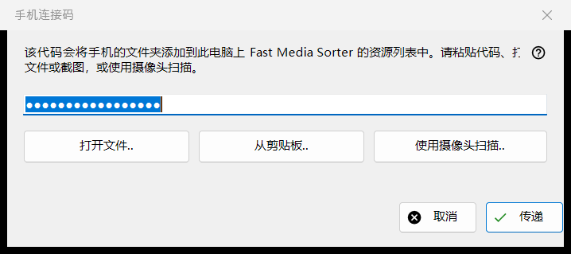
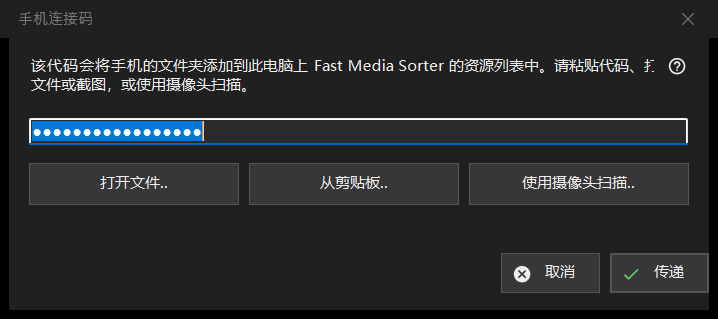

手机连接码
用途说明
接收手机应用生成的连接码并交给 Fast Media Sorter，后者会把手机的文件夹添加到此电脑上的资源列表中。它从 Share Manager 主窗口的「手机验证码..」按钮打开。


操作顺序
- 用四种方式之一把代码送入窗口：在文本框中输入或粘贴，或点击「打开文件..」、「从剪贴板..」或「使用摄像头扫描..」。
- 点击「传递」。
- 在出现的 Fast Media Sorter 窗口中确认添加文件夹。
界面元素
连接码
一个单行文本框，显示圆点而不是字符，因为代码是机密；它从不写入日志。文本框为空时点击「传递」，会提示你输入代码、粘贴代码，或打开文件或截图。
打开文件、剪贴板和摄像头
「打开文件..」读取 .fmscfg、.json 和 .txt 文件以及二维码图片（.png、.jpg、.jpeg、.bmp、.webp）；也可以把文件拖到窗口上。「从剪贴板..」从剪贴板读取代码。「使用摄像头扫描..」打开摄像头窗口，扫描到的文本按粘贴处理。
传递
代码经过检查后，发送给正在运行的 Fast Media Sorter，其自己的导入对话框仍会照常询问。成功时状态显示「代码已传递：请在 Fast Media Sorter 窗口中确认添加。」，此窗口随即关闭。如果找不到 Fast Media Sorter、版本较旧或没有响应，代码会连同隐私标记放到剪贴板上，状态行提示通过资源面板中的「从剪贴板导入」粘贴。
状态行中的消息
既不是连接码也不是资源设置文件的文档会被报告为无法读取。由较新版本生成的文件会提示你更新 Fast Media Sorter。如果其他程序占用了剪贴板，状态会如此说明。